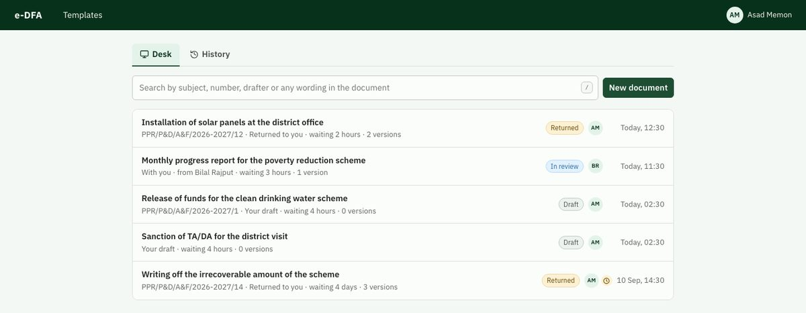

e-DFA
Drafting, review, approval and printing of official letters for a Government of Sindh directorate.
Overview
Before e-DFA, a drafter kept the Word file on their own PC, printed it, and the paper walked up the hierarchy. Corrections came back as pen marks, some were missed, and two copies of a letter could exist with different mistakes. e-DFA keeps one copy on the server and makes both failures impossible.

What it does
One copy, every version kept
The server holds the only copy, numbers every version and links each to the last. An approved letter can never be changed.
No missed corrections
Every comment stays open until it is resolved. A draft cannot go back up while any comment is open.
Mulazim AI built in
Grammar checks as you type, shorter or more formal wording, a chat about the document and a private summariser. Nothing changes until the officer presses Apply.
Letters ready to sign
PDF and Word output on the official letterhead, from the department's own templates.
Works on a phone
Officers can review and approve from a phone on the office network.
Simple to run
A one-file installer, nightly backups with a tamper check, and updates the IT officer applies.
How it works
- 1
Draft
The drafter writes the letter in the browser, from a template.
- 2
Review
It goes up to the reviewing officer, who comments or passes it on.
- 3
Approve
The approving authority approves it, or returns it with comments.
- 4
Print
The approved letter prints on the letterhead, ready to sign.
Built with
- Fastify
- React
- SQLite or Postgres
- TipTap
- Gemma, on site